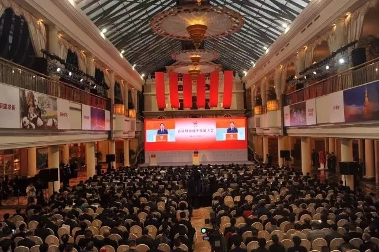
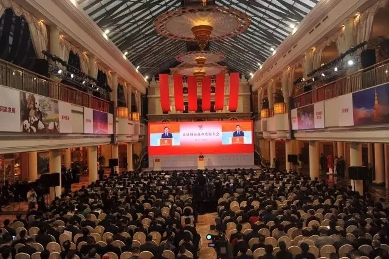

2016.2.26
【川商总会】刘永好会长上任：让了不起的川商影响世界!
 

共话桑梓 共叙乡情 共谋发展
2月24日上午，以“回家发展振兴家乡”为主题的首届川商返乡发展大会在成都隆重举行。四川省委书记王东明出席大会并致辞，省委副书记、省长尹力主持大会，省政协主席柯尊平出席大会。以新希望集团董事长刘永好、通威集团董事局主席刘汉元、北京迪信通集团董事长刘东海等为代表的400余名境内外川商代表应邀出席大会，共谋回乡发展新未来。
会上，新希望集团董事长刘永好作为四川省川商总会会长发表重要讲话。
感谢九千万的父老乡亲，没有你们的帮助和支持，我们川商不会有今天。先富帮后富，最终实现共同富裕，我们责无旁贷。 我们是川商，我们骨子里面就有一股不怕困难的精神，要有这样的韧性和决心。
反腐会给我们带来大机遇、大好处。现在阳光普照，所有的企业，只要有能力、有本事都可以大发展。
先富帮后富，最终实现共同富裕
在四川省委省政府的支持推动下，川商总会成立了，川商投资基金也成立了，今天我们召开了川商返乡发展大会，省委省政府主要领导几乎都参加，这是对我们川商的肯定、信任、支持，也是对我们极大的鼓励！ 尹省长、东明书记和我们交流，鼓励我们川商团结起来，回川投资，回川发展，四川非常欢迎各位川商。 川商是我们四川宝贵的财富，川商在四川一定大有作为，也感谢九千万的父老乡亲，没有你们的帮助和支持，川商不会有今天。 川商是先富起来的一批人，先富帮后富，最终实现共同富裕，这是小平同志讲的，也是我们党和国家所期盼的，今天召开川商返乡发展大会，就是先富帮后富，帮我们的父老乡亲，帮我们企业自身的发展，所以说我们责无旁贷。
我为川商的进步和成就感到骄傲
川商精神凝聚天下，首先川商承载着川人优秀的品质，历史上川军英勇善战，记得抗战时期，三百万川军出川，对抗战贡献巨大，牺牲最多，川军能打仗，这已成为共识。 改革开放以来，大概有上千万川人出去学习、打工、发展，五年、十年、二十年、三十年，一大批川人成为了管理者，更有一些川人成为川商。这些川人在全国各地活跃，甚至有一大批人到美国、欧洲、新加坡等海外各地，在当地形成一股四川力量，中国力量，在不同的地方都成立了四川商会。 前天、昨天，我和好几位美国四川商会、新加坡四川商会和加拿大四川商会的会长交流，他们给我讲，最近这几年，他们感觉到中国强大了，中国机会多了，他们愿意回来发展，但是跟谁联系，怎么样发展，他们需要一个组织。今天我们川商总会成立了，川商总会就是这样一个跨区域的四川商人组织。 历史上川商的杰出代表卢作孚先生，他为祖国的抗战做出了相当大的贡献，改革开放以后，又有一大批优秀的川人在全国各地，乃至全球投资兴业。 今天四川商人在四川本土，在全国已经为中国经济的发展做出了相当大的贡献，统计资料表明，现在四川商人所创造的价值占到四川GDP的60%以上，这是非常了不起的。近年来有一些年轻的四川人在不断的发展，成为非常优秀的人士。 比如，搜狗总裁王小川，27岁成为搜狐最年轻的副总裁，32岁时全面负责搜狗公司的战略规划和运营管理，带领搜狗快速成长为中国用户量第四的互联网公司；哈佛女孩刘亦婷在美国从事商业咨询；峨眉山人杨璐菡因在修改细胞基因组上取得的突破性成绩，被称为“基因剪刀手”，并成立了自己的高科技公司；李英睿26岁时便成为华大基因首席科学家。
也就是说我们四川不仅有英勇善战的川军，还有能够受全国欢迎的川工，更有咱们这些川商，还有一些在科技领域做出贡献的川人，他们有的已经成为新的川商。我为我们川商的进步和成就感到骄傲。
四川蕴藏着巨大商机
第一，四川经济经过了改革开放三十多年的发展，已经取得了相当大的成就。以前讲蜀道难难于上青天，今天机场、高铁、公路四通八达，四川交通得到巨大改善，并且四川已经和欧洲建立了欧亚通道，四川航空的吞吐量全国排在前列等，这些都解决了我们蜀道难的问题。
第二，四川有九千万人，巨大的市场，由于历史的发展，我们还有很多的功课要补，这就是机会。
另外，我们四川省委省政府对川商的重视、对川商的肯定，出台了一系列的政策扶持，这是又一大利好。
一个成功企业，哪个不经过几道坎，过几道关？
当然尽管有这样的一些利好，但是最近全球经济不景气，中国的经济增速在下行，有不少的传统制造业感觉到压力大，市场低迷、盈利低、成本高、竞争加剧，在座的川商或多或少的都感觉到日子不好过，这也是现实。 但是，我们又看到有一些新型的企业在进步、发展、转型。以我们川商总会荣誉会长王健林先生来讲，他是做传统产业，做商业地产，最近这几年他大刀阔斧的做转型，发展旅游、文化、电影等产业取得相当好的成绩，现在他是中国首富，甚至亚洲首富，说明转型取得了巨大的成功。 还有不少四川企业也在转型，我们多数川商从事传统产业，现在的确遇到了一些困难，但是要记住我们是商人，我们是川商，我们骨子里面就有一股不怕困难的精神，要有这样的韧性和决心。成功的企业，哪个又不经过几道坎，过几道关？ 拿我们新希望集团来讲，创业初期想做音响，结果被公社书记“枪毙”了，说是走资本主义道路，这是一道坎。再接着，我们向亲朋好友借钱发展企业，年关了，大家都要钱，都没钱，实在没有办法，想过去想过来，最后我们四兄弟考虑是不是跳岷江，当然我们最终坚持下来了。我们走过来了，现在看来一片光明。 大概在上世纪90年代初期，那个时候还在争论姓社姓资，我们本来好好的，突然一下有人说要把我们抓起来，有人说你们是走资本主义道路，有人说现在国家不支持这样做了，我们几个兄弟找到当时的县委书记，说我们不干了，把企业交给国家。县委书记说国家没这样的政策，叫我们好好干，就这样我们才有了今天，我们经过好多道坎！今天遇到的困难，我相信是暂时的。
反腐会给我们带来大机遇大好处
有人说反腐可能带来了一些经济波动，当然短期内可能确实有一些波动，有一些政商关系的波动，有个别政府官员不够作为，这也是现实，我们大家自己也有一些信心不足。但是我认为，反腐会给我们带来大机遇大好处。
要是不反腐，好的资源、好的机会、好的项目有你的份吗？现在阳光普照，所有的企业，只要有能力、有本事都可以做。另一方面，以前顺风顺水，但做企业哪能总顺风顺水啊？靠拼搏靠自身，努力认真去做的企业能够长久能够发展，这是根本，我们商人应该有这样的精神，我们川商更应该有这样的精神。
我们的传统企业、传统产业必须转型
现在转型正是时候，转型过去就会大踏步前进。我们新希望来自最传统的产业，但最近两年大转型：第一是年轻化，有人说我女儿接班了，不仅仅是女儿接班的问题，而是我们整个干部的平均年龄下降了18岁，从总部到二级公司、三级公司，这样的格局意味着什么？年轻人更有底气、更有活力、更能够指引转型，提高效率。第二我们提出了大踏步的走出国门，我们在新加坡，在、澳大利亚、美国、欧洲建立了区域总部，在近30个国家建立了50多家企业，现在海外的投资发展带来了新的机会。 我们原来是饲料为主，养猪、养鸡，肉制品，我们现在大力发展两端。我们实行合伙人制，实行新的股权激励机制，在这个转型变革下，我们主动关掉了30多家不具备优势的企业，但是我们的销售额没有少，利润还增长了，这就是转型。另外我们把产业资本和金融资本结合起来。 这是我们做企业取得的进步，可见必须转型。如果我们还抱着传统的、原来的思维去想，肯定行不通了。
作为首任会长，我将认真的去履职
川商总会是联系沟通和服务全球川商的一个品牌，我们服务川商，我们联络感情，我们寻找机会，成为与四川省委省政府，与各个地方的政府沟通的一个桥梁，我们把四川推荐给大家，把四川的投资机会推荐给大家。我们的川商有什么困难，有什么问题，有什么诉求，川商总会可以穿针引线，来搭桥，为四川经济的发展铺路。 川商怎样打造川商总会，我觉得要提供服务，要为我们的川商提供平台，要凝聚川商，这同时要动员川商，在四川未来的发展中贡献力量。 我希望全球的川商，在座的川商能够在精准扶贫方面作出贡献，我也听到好几个企业家给我讲，他们愿意参与精准扶贫。 为了支持鼓励推动川商的发展，我们设立了川商返乡兴业投资资金，我们希望大家共同出钱，共同来推动一些事儿，来鼓励支持我们川商回川投资，好的项目可以投，国有企业改制改造可以投，混合所有制改造可以投，四川的旅游产业、四川的优质产业发展可以投，我们的川菜、川酒都可以投。 荣誉会长王健林先生在四川已经投了一千多亿，好多企业在四川已经做了大量的事，今后四川的投资靠什么，主要靠我们川商，在省委省政府的支持下，我们川商能够昂首挺胸回家，为四川的经济建设做贡献，回馈父老乡亲。同时，我们还能在四川发展，在四川赚钱。 作为川商总会的首任会长，我觉得担子很重，我将认真去履职，联系沟通凝聚更多川商，为大家争取权益，为大家在四川投资、全国投资、全球投资做贡献。 今天有了这样阳光普照的政策，有了四川省委省政府和各地政府的大力支持，我相信在未来，我们川商会发展得更好，也会对我们四川经济发展做出更大的贡献。
会议亮点
返乡兴业投资基金揭牌已募20亿元
2月24日，川商返乡兴业投资基金正式揭牌。基金首期规模暂定为30亿元，目前募集资金已达20亿元，其中省财政出资3亿元。专门设立支持返乡兴业的投资基金，这在全国尚属首例。
川商返乡基金委托新希望集团牵头组建专业化管理团队进行募集和管理。川商返乡基金将采取参股、控股或者通过资产证券化等方式进行投资。其中，投资于四川企业和四川省内项目的比例将不低于60%，单个项目投资比例不超过基金总规模的20%。基金的投资团队已开始深入接洽第一批拟投资项目。
合作项目278个投资额1582亿
通过前期充分对接洽谈和活动期间多形式对接交流，首届川商返乡发展大会期间，四川21个市(州)共签约川商返乡投资合作项目278个，投资总额1582.16亿元。2月24日上午，28个项目现场集中签约，投资金额192.28亿元。
此次大会签约的项目中，第二产业涉及的投资额最多，占比超六成，其次是第三产业，涉及额占比达35%左右。签约项目，总体呈现出产业特色鲜明、投资规模较大、返乡范围广泛的显著特点。此次签约，七大优势产业、七大战略性新兴产业、五大高端成长型产业、五大新兴先导型服务业等“双七双五”产业投资额占总投资额的64.5%。
新希望返乡新发展
四川发展—新希望集团战略合作
四川发展（控股）和新希望集团分别作为四川省最大的国有企业和民营企业，借助本次川商发展大会举行的宝贵机会，建立战略合作伙伴关系。双方将充分发挥各自在资本、资源、人才、技术、管理等方面的优势，在精准扶贫、农业食品、文化旅游、地产及城市基础设施、健康医疗、金融投资等领域，通过股权投资、项目合作等多种方式进行全面合作。同时，双方还将在企业管理和企业升级转型等方面建立深度交流和互访机制，推动企业快速成长。目前，双方已把凉山州精准扶贫作为首个重点示范项目开展合作。
联合成立旅游发展基金
与四川省政府、九鼎投资联合成立旅游发展基金。预计基金总规模将超过30亿元，带动金融资本和社会资本投入可达50-100亿元。该基金由昆吾九鼎投资和新希望集团合资组建基金管理公司担任gp和基金管理人，负责基金的运营及管理。目前已完成基金管理公司的设立，计划不低于60%的资金投资于四川省内。
该基金重点投资四川省境内的旅游景区打造、旅游新业态、旅游全产业链的延伸开发等，对转变财政支持产业发展方式，创新旅游业投融资机制，加快四川省旅游业转型升级，加快四川省旅游经济强省和世界旅游目的地建设等，都具有非常重要的意义。